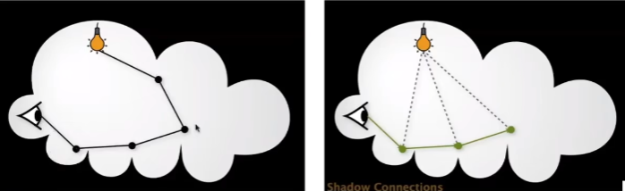

GAMES 101 L18-Advanced Topics
Advanced Light Transport
Non-biased
Bidirectional Path Tracing (BDRT)
Recall: a path connects the camera and the light
BDRT:
- Traces sub-paths from both the camera and the light
- Connects the end points from both sub-paths
- Suitable if the light transport is complex on the light’s side
- Difficult to implement & quite slow
Metropolis(n.) Light Transport (MLT)
- A Markov Chain Monte Carlo (MCMC) application
- Jumping from the current sample to the next with some PDF
- With Markov Chain we are able to determine the PDF we use for Monte Carlo integration. The variance is minimized when the integrand (被积函数) and the shape of the PDF are the same.
- Very good at locally exploring difficult light paths
- Key idea:
- Locally perturb (扰动) an existing path to get a new path
- Works great with difficult light paths
- Also unbiased
- Difficult to estimate the convergence rate (we can estimate the convergence rate of path tracing)
- Does not guarantee equal convergence rate per pixe!
- So, usually produces “dirty” results
- Therefore, usually not used to render animations
Biased
Photon Mapping (光子映射)
- A biased approach & A two-stage method
- Very good at handling Specular-Diffuse-Specular (SDS) paths and generating caustics (焦散)
Approach
- Stage 1 - photon tracing
- Emitting photons from the light source, bouncing them around, then recording photons on diffuse surfaces
- Stage 2 - photon collection (final gathering)
- Shoot sub-paths from the camera, bouncing them around, until they hit diffuse surfaces
- Calculation - local density estimation
- Idea: areas with more photons should be brighter
- For each shading point, find the nearest N photons. Take the surface area they over.
- Density = N / area
Why Biased?
- Small N -> noisy; big N -> blurry (模糊)
- This is because .
- But in the sense of limit, more photons emitted -> the same N photons covers a smaller -> is closer to dA
- So, biased but consistent!
An easier understanding bias in rendering
- Biased == blurry
- Consistent == not blurry with infinite #samples
Why not do a “const range” search for density estimation?
- “Const range” means we can take a unit area (e.g., ) and increase the number of photons in there, and then estimate local density by counting N. However, in this way will never get close to dA, so we don’t use this method.
Vertex Connection and Merging (VCM)
- A combination of BDPT and Photon Mapping
- Key idea:
- Let’s not waste the sub-paths in BDPT if their end points cannot be connected but can be merged
- Use photon mapping to handle the merging of nearby “photons”
Instant Radiosity (IR)
- Sometimes also called many-light approaches
- Key idea:
- Lit surfaces can be treated as light sources
- Approach:
- Shoot light sub-paths and assume the end point of each sub-path is a Virtual Point Light (VPL)
- Render the scene as usual using these VPLs
Pros:
- fast and usually gives good results on diffuse scenes
Cons:
- Spikes will emerge when VPLs are close to shading points
- Cannot handle glossy materials
Advanced Appearance Modeling
Non-Surface Models
Participating Materials
Phase function
Use Phase Function to describe the angular distribution of light scattering at any point x within participating media.
Rendering
- Randomly choose a direction to bounce
- Randomly choose a distance to go straight
- At each ‘shading point’, connect to the light

…The following content is omitted…
GAMES 101 L18-Advanced Topics
http://example.com/2025/01/19/GAMES101-L18-AdvancedTopics/